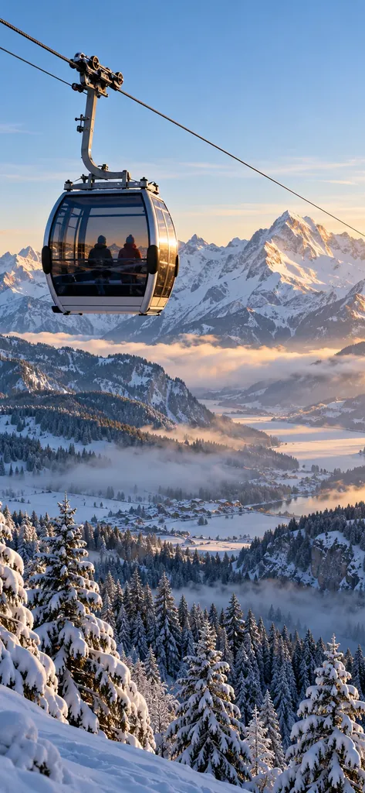
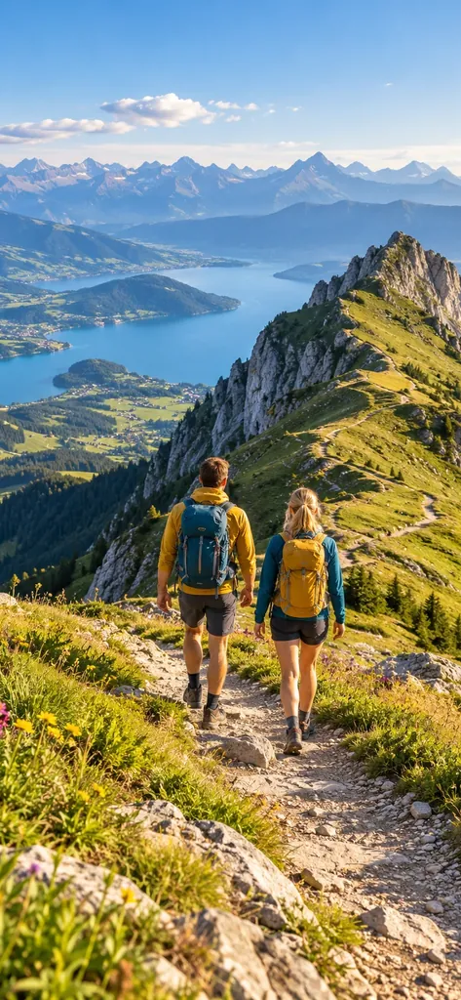
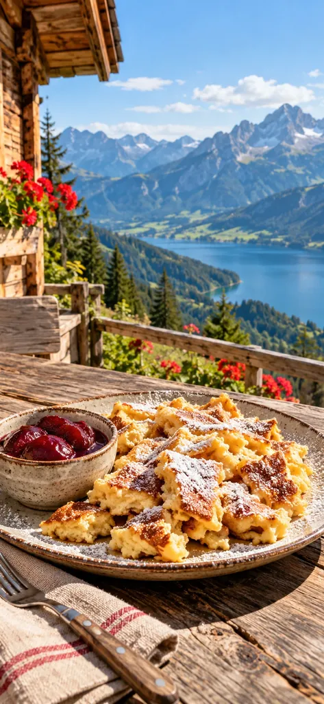
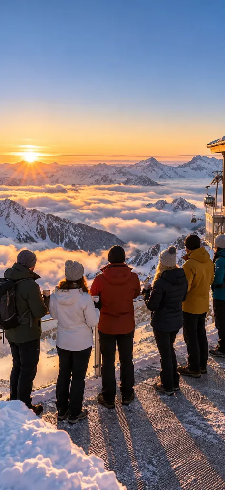
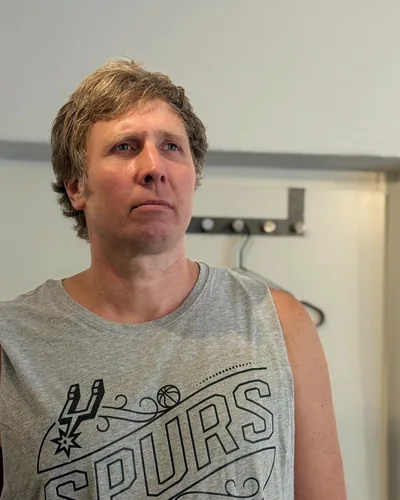
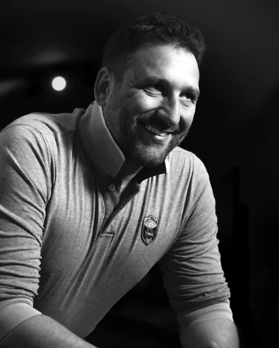

Bringt Social Media wirklich mehr Gäste?
Wie viele Gäste die eigene Social-Media-Arbeit einer Bergbahn bringt, hat bisher keine Studie gemessen. Deshalb messen wir es bei Ihnen: mit eigenen Links und Codes, etwa für Tickets und Events.
Erste Fahrt am Morgen, die Hütte, der Sommer am Berg: Wir zeigen, warum sich der Weg nach oben lohnt – auch an ruhigen Tagen.
Auf einen Blick
Der Winter ist gelernt, der Sommer wächst – und an Regentagen und unter der Woche bleibt Platz in den Kabinen. Wir zeigen, warum sich der Weg nach oben lohnt: die erste Fahrt am Morgen, die Hütte, der Sommer am Berg.
Stand: Oktober 2026
Bergfahrt
Winter, Sommer und alles, was oben passiert: An jeder Station zeigen wir, was wir für Ihren Berg tun.
Gelernt. Im Winter kommen die Gäste von selbst – die Frage ist, ob zu Ihnen oder zum Nachbarn.
Was wir tun
Wir zeigen, was Ihren Berg unterscheidet: die erste Fahrt am Morgen, die Abfahrt, den Blick von oben – damit Gäste wissen, wohin sie fahren.
Wachsend. Im Sommer zählen Deutschlands Seilbahnen inzwischen mehr Gäste als im Winter – doch jeder bringt im Schnitt weniger Umsatz.
VDS, Pressemappe 11/2025Was wir tun
Wandern, Biken, Aussicht, Sonnenaufgang am Gipfel: Wir machen den Sommer am Berg zum Grund für einen Ausflug – auch unter der Woche.
Mehr als die Fahrt. Hütte, Terrasse, Events: Was oben passiert, bringt Gäste auch an ruhigen Tagen.
Was wir tun
Wir zeigen Ihre Küche, Ihre Terrasse und Ihre Events, bevor sie stattfinden – und Ihre Gäste planen den Ausflug danach.
So kann es aussehen
Beispiele, wie Ihre Beiträge aussehen können – die Bilder sind KI-generiert. Mit dem ersten Pilotprojekt zeigen wir hier echte Beiträge.

Erste Fahrt Die Kabine über dem Nebelmeer

Sommer am Grat Wandern mit Blick auf den See

Auf der Hütte Kaiserschmarrn mit Aussicht

Sonnenaufgang am Gipfel Mit der ersten Bahn nach oben
Warum Sichtbarkeit
Wie viele Gäste eigene Social-Media-Arbeit einer Bergbahn bringt, hat bisher keine Studie gemessen. Belegt ist, wo Ausflüge beginnen – und was Sichtbarkeit bewirken kann.
Sichtbarkeits-Check
Fünf kurze Fragen – klicken Sie jeweils die Antwort an, die am besten passt. Am Ende sehen Sie, wo Sie stehen und was am meisten bringt.
Ihr Ergebnis
– / 10 Beantworten Sie die fünf Fragen.
Ein Selbst-Check, keine Messung: Er zeigt, wo die größten Hebel liegen. Was er Ihnen konkret bringt, schauen wir uns gern gemeinsam an.
Mit diesem Ergebnis anfragenLeistungen & Angebot
Feste Pakete gibt es bei uns nicht. Sie bekommen ein individuelles Angebot – es hängt vor allem von vier Dingen ab.
Fragen
Wie viele Gäste die eigene Social-Media-Arbeit einer Bergbahn bringt, hat bisher keine Studie gemessen. Deshalb messen wir es bei Ihnen: mit eigenen Links und Codes, etwa für Tickets und Events.
Ja. Wir drehen in beiden Saisons, damit Ihr Berg das ganze Jahr Gründe für einen Ausflug zeigt – Pisten im Winter, Wandern, Biken und Events im Sommer.
Fragen zu Kosten, Ablauf und Zusammenarbeit beantworten wir auf unserer Über-uns-Seite.
Sprechen wir
Schreiben Sie uns kurz, wo Sie heute stehen – Bahnen, Saisons und Ihre Kanäle helfen uns für ein erstes Angebot. Wir melden uns innerhalb von zwei Werktagen, kein Pitch, kein Druck.
Ihre Ansprechpartner

Nicolas Lekai Creative Direction
Daniel Lenzenhuber ManagementWeitere Bereiche